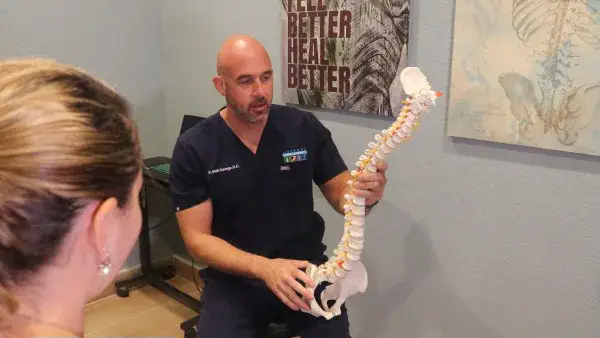

Chiropractic & Massage
$59
Chiropractic care, therapeutic massage and wellness services at 61 N Kegley Rd, near Walmart, H-E-B, and I-35.
4.7from 1051 Google reviewsPick the first visit that fits. Each special starts with an initial consultation at our Temple office.
New Patient Specials are cash-pay rates. We take most health insurance plans and encourage you to share yours when booking as it may reduce the cost of your visit.

At our Temple clinic, we focus on the cause of the discomfort, not only the symptom. Chiropractors, massage therapists, and a nurse practitioner build a plan around the person, the condition, and the goal.
Care at our Temple office, coordinated by one team.
Specific adjustments matched to what your spine needs, not a one-size-fits-all routine.
Learn moreGentle, specific care for kids, from infants to teenagers, always at a child’s pace.
Learn moreLow-force, comfortably positioned care shaped around where you are in your pregnancy.
Learn moreHands-on muscle work, assisted stretching and guided exercise that help your adjustments hold.
Learn moreStretchy tape placed after the exam, so the joint can still bend for the rest of the day.
Learn moreA long-term, drug-free plan for pain that has stuck around, built around what you want to get back to.
Learn moreThe strains, tweaks, and overuse that come with an active life. Care in Temple built around getting you back to the sport rather than away from it.
Learn moreTherapeutic massage from licensed therapists, easing tight muscles so the work holds.
Learn moreDrug-free pain relief options, chosen for your body after a careful first consultation.
Learn moreOngoing care for people who would rather keep moving well than wait for the next problem.
Learn moreA clinician-guided program that may include nutrition guidance, lifestyle support, and medication when it is prescribed. Plans start as low as $149 a month.
Learn moreBotox for frown lines and wrinkles. New patients can start with 20 units for $199.
Learn moreChiropractic, medical, and therapeutic care together, so the neural, muscular, and skeletal systems are cared for as one.
We focus on correcting underlying dysfunctions, not just easing symptoms.
Our professionals coordinate each patient’s care for the best possible outcome.
From manipulation and manual therapy to assisted stretching and corrective exercise, each treatment is chosen with research behind it.
Every care plan is designed around the individual diagnosis.
A high standard of care balanced with practical, cost-conscious options.
Multiple specialties under one roof at 61 N Kegley Rd, near Walmart, H-E-B, and I-35.
Conditions that affect mobility, comfort and overall wellness.
Our Temple clinic at 61 N Kegley Rd is near Walmart, H-E-B, Starbucks, Chick-fil-A, and Rosa’s Cafe. It is minutes from Spare Time Texas and Wildflower Country Club, and it serves neighborhoods including Lake Pointe, Echo Heights, and Heritage Place. Nearby retirement communities include Brookdale Western Hills, Wildflower Villas Senior Living, and Creekside Terrace. With access to W Adams Ave, TX-36, and I-35, and about 10 minutes from Baylor Scott & White, the clinic is easy to reach for families and seniors.
| Monday | 8:00am to 6:00pm |
| Tuesday | 8:00am to 6:00pm |
| Wednesday | 8:00am to 6:00pm |
| Thursday | 8:00am to 6:00pm |
| Friday | 8:00am to 6:00pm |
| Saturday | 9:00am to 2:00pm |
| Sunday | Closed |
Our outstanding team is here to help you reach your healthcare goals.
Google reviews from our Temple patients, quoted word for word. Read all testimonials.
Preview note: Google reviews widget from GoHighLevel goes here. Until it is embedded, three Google reviews from the current Temple site are shown word for word.
Staff was very efficient and courteous. It was a very relaxing visitMaria MGoogle review, Temple
Big shout-out to Michelle for hitting all the right spots and helping me feel relaxed and refreshed. After playing baseball this weekend, I was sore and tight. I wasn’t up for my usual deep tissue session, so I opted for a gentler, medium-pressure massage—and Michelle nailed it! If you need a great massage, go see her at Anthony Chiropractic. Highly recommend! 💆♂️ Also, a big shout-out to the whole clinic! Dr. Kelly is at the helm doing her thing, supported by her amazing staff: Cierra, Izaiah, Sebastian, Michelle, and Bella. Thank you all for your hospitality—you always make me feel like family when I walk in! ❤️Jacob UGoogle review, Temple
I have been seeing Anthony for a couple seasons now. I see Adam in Temple, and he is awesome…. I have been in pain for years and just recently realized it.. the tins unit is great and the message therapist.. All the treatments help. Would recommend to anyone suffering.Jeff LGoogle review, Temple
Yes! We accept most major health insurance plans. Our team will verify your coverage and explain your benefits before your visit so you’ll know exactly what to expect.
Your first visit includes a detailed consultation and evaluation with one of our chiropractors. We’ll review your health history, identify the root cause of your symptoms, and create a personalized treatment plan focused on your comfort and long-term wellness.
In most cases, you don’t need a referral! However, some insurance plans may require one from your primary care physician (PCP). If that’s the case, our team can assist by contacting your PCP and helping with the referral process.
It depends on your condition and goals. Some patients benefit from weekly visits, while others come monthly for maintenance. Your chiropractor will recommend a plan that fits your lifestyle and helps you feel your best.
61 N Kegley Rd, Temple, TX 76502. Free insurance verification. Se Habla Español.